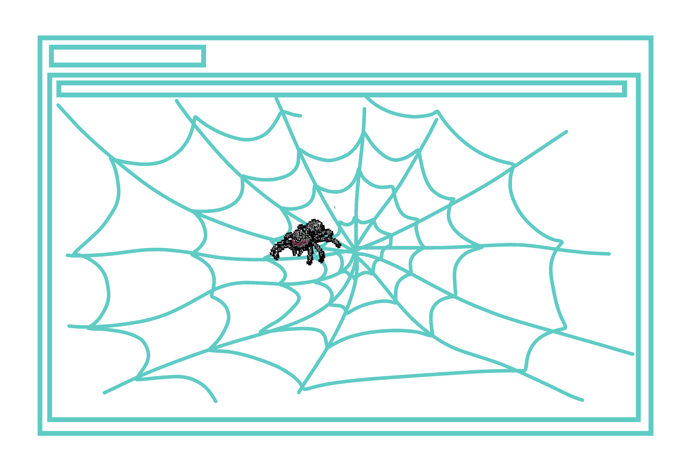
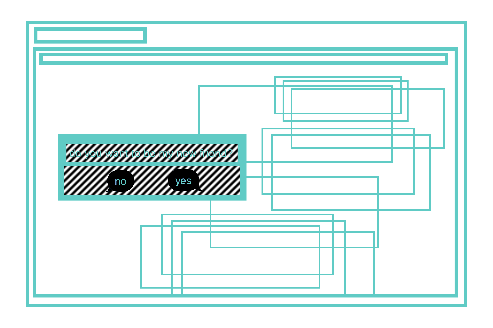

inspired by J.R. Carpenter's A Handmade Web
This reading made me think a lot about the process of taking care of a sacred space not as a duty but as a ritual. Kind of that manual labour involved in building and protecting something meaningful. My favorite thought from this essay is the idea of the ‘handmade web’ to suggest slowness and smallness as forms of resistance. With this, I came up with an idea of making an interactive website where the user is a tiny spider that has to knit and upkeep its own web across the screen. Starting with a blank slate to make the spiderweb design of their own, the user will then have to take care and repair the web over time –since it will face rain, bugs, and different things– to help their spider survive.
inspired by Taeyoon Choi's Hello World!
I couldn't help but think about the human brain when reading this essay. I think this specific parallel between the brain’s way of translating symbols –whether they are images, gestures, sounds, etc– to understand and navigate daily life and a computer’s way of processing code to run exactly as it should is fascinating. I was even more tripped out when I thought about the interaction between the brain (a human) translating ideas into code to then program and build a computer that will be doing a very similar thing when finished. My favorite take away from this reading was how both a computer’s circuit reminded Taeyoon Choi of abstract minimalist art and likewise, the painting Instant City reminded him of the computer architecture diagram. One mirroring the other, much like the brain and a computer. I wanted to make a website that would play with this concept of translation. I was thinking of a website that would generate sentences played out loud in gibberish (that sound like they should be in english). This page would also have a little type box in the center for the user to try to interpret what their computer is saying. There is no right answer but every guess will be recorded and then the user will be able to see all the different –and even funny– interpretations others made.
inspired by Callum Copley's A Friend is Writing
The concept I found most interesting about this reading is the way humans become addicted to the stimulus, stress, anticipation, and uncertainty that a text conversation, social media interaction, or incessant scrolling can bring. Especially when, let’s say a throbber “...” reminds us of the time rupture that exists in texting conversations, a delay filled with either excitement or anxiety (or both). With this in mind I thought of creating a website that produces the same type of addicting sensation: where the user can’t resist the ‘not knowing’ and has to constantly interact with their computer till it becomes extremely overwhelming. This website will start with a single pop up that asks: “do you want to be my new friend?” with the option of yes and no. Depending on what the user decides it will generate another yes or no question and so on, to create kind of a single sided conversation. Eventually the screen will be filled with all of these pop ups from the conversation created with seemingly no end. I want this to feel stressful, so the website will sometimes ask three things at once super fast or stop and “think” …